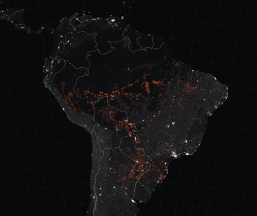

História
Como tudo começou
O primeiro homem da Europa a pisar as terras amazônicas foi Vicente Pinzon em janeiro de 1500, ao percorrer a foz do Amazonas, conheceu a ilha de Marajó e surpreendeu-se ao ver que se tratava de uma das regiões mais povoadas do seu tempo. Ficou perplexo e maravilhado com as águas doces do mais extenso e mais volumoso rio do mundo. Foi bem acolhido pelos índios da região. Mas apesar de fantástica, a sua aventura marcou o primeiro choque cultural e o primeiro ato de violência contra as tribos da Amazónia. Vicente raptou índios e levou-os consigo para vender como escravos na Europa.
- 1.Primeiros povos
- 2.Século XVI
- 3.Século XIX
- 4.Hoje em dia
-
- 1.1.Os povos atuais
- 1.2.Incêndios
Primeiros povos
Os primeiros habitantes humanos da Amazónia criaram milhares de "ilhas florestais" artificiais enquanto domavam plantas selvagens para cultivar alimentos.
A descoberta dos montes é a evidência mais recente para mostrar o extenso impacto que as pessoas tiveram na área. Desde sua chegada, há 10.000 anos, eles transformaram a paisagem quando começaram a cultivar mandioca e abóbora. Isso levou à criação de 4.700 ilhas florestais no que hoje é Llanos de Moxos, Cultura hidráulica das lomas, no norte da Bolívia. Esta área de savana inunda de dezembro a março e é extremamente seca de julho a outubro, mas os montes permanecem acima do nível da água durante a estação chuvosa, permitindo que as árvores cresçam sobre eles. Os montes promoveram a diversidade da paisagem e mostram que comunidades de pequena escala começaram a moldar a Amazónia 8.000 anos antes do que se pensava anteriormente.
Século XVI
No século XVI, quando os europeus atingiram o rio Amazonas, encontraram uma floresta habitada por povos indígenas diversos culturalmente que sustentavam populações numerosas. Infelizmente, durante a conquista e a colonização portuguesa desse território, baseadas nas atividades de coleta de produtos naturais e agricultura, as populações indígenas foram reduzidas drasticamente, sobretudo por causa das doenças trazidas pelos europeus.
Os europeus ficaram muito surpresos quando desembarcaram no vale do Amazonas e encontraram comunidades relativamente superpovoadas. Havia assentamentos indígenas com milhares de habitantes! Entretanto, essas sociedades amazónicas sofreram grandes impactos a partir da chegada desses exploradores. Primeiro, com a invasão de vários aventureiros da Espanha, Holanda, França, Inglaterra e Irlanda em busca de supostos paraísos repletos de metais preciosos e, em seguida, durante o processo de ocupação do território, com a imposição do estilo de vida português em grande parte do que hoje é Amazónia Legal.
Século XIX
No século XIX, a Amazónia estava composta principalmente por indivíduos miscigenados (índios, brancos e negros), os quais deixaram de concentrar seus esforços na coleta de produtos naturais e na agricultura para viver em função do grande do ciclo econômico da borracha. Esse ciclo enriqueceu os barões de Belém e Manaus e promoveu o desenvolvimento arquitetônico e cultural dessas duas principais cidades amazônicas.
Após a crise do ciclo da borracha, a Amazónia entrou num período de estagnação e por isso, na primeira metade do século 20, ficou distante e esquecida do restante do Brasil. Somente a partir de 1960, com os planos de integração nacional, descoberta de minérios e grandes projetos de desenvolvimento, a região voltou a crescer e receber novos migrantes de todo o Brasil, principalmente do Sul do país. Esse período, contudo, marca uma mudança drástica na paisagem da Amazónia: a devastação da floresta provocada principalmente pela abertura de estradas para o estabelecimento de pastos e exploração de madeira predatória.
Hoje em dia..
Os povos atuais
Atualmente, no século 21, o desafio dos povos que habitam a Amazónia, a maior floresta tropical do mundo, é integrar desenvolvimento econômico com proteção de seus recursos naturais. Para isso, muitas inciativas estão sendo desenvolvidas, entre as quais a criação de áreas protegidas (Unidades de Conservação, Terras Indígenas e Terras Quilombolas) e o combate ao desmatamento.
Cerca de 180 povos indígenas vivem na região amazónica do Brasil, somando uma população de aproximadamente 208 mil pessoas. São povos com as mais diversas situações de relação e contato com as sociedades não indígenas, marcadamente ocidentais e europeias. Ali vivem povos livres que são isolados e não têm qualquer contacto com as sociedades nacionais.
Incêndios
Mesmo nas regiões mais húmidas da Amazónia, o impacto de incêndios florestais que só se alastram por essas áreas quando são registradas fortes secas é significativo e capaz de mudar as características da vegetação ao longo das próximas décadas.
A Amazónia brasileira não ardia tanto desde 2010.
Trata-se de um crescimento de cerca de 6% em relação ao mesmo período de 2019, quando se contabilizaram 53.023 incêndios, e quando as imagens das chamas naquela que é a maior floresta tropical do planeta circularam pelo mundo e geraram indignação.
